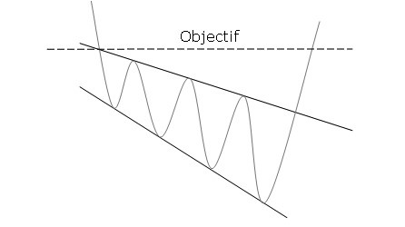
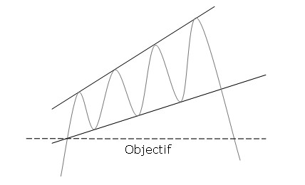
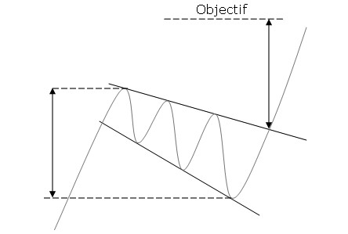
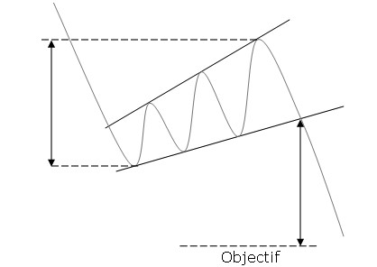

- Figures chartistes : Le Biseau d'élargissement -
Un biseau d'élargissement descendant ne marque pas l'essoufflement du courant vendeur, mais la volonté des acheteurs à reprendre la main. La divergence des deux droites dans le même sens (augmentation de l'amplitude des cours) nous informe que les cours continuent à baisser avec des mouvements d'amplitude de plus en plus bas. Les vendeurs parviennent à faire replonger le cours sur la résistance mais perdent la main après formation d'un nouveau plus bas. Le plus haut atteint lors de la première correction sur la résistance du biseau d'élargissement descendant viendra former la résistance. Une deuxième vague de baisse va ensuite intervenir avec plus d'amplitude, signal de la perte de main des vendeurs après un nouveau plus bas. Une troisième vague se forme par la suite mais les vendeurs perdent encore la main après la formation de nouveaux plus bas. Et vice cersa pour un biseau d'élargissement ascendant.
Durant la formation d'un biseau d'élargissement, les volumes n'ont pas de comportement particulier mais ils augmentent fortement au moment de la cassure de la ligne de support.
Validité :
Le biseau d'élargissement est confirmé/valide si il a bien oscillation entre les deux droites. Chacune de ces droites doit avoir été touchées au minimum 2 fois pour valider la figure. NB : une ligne est dite "valide" si le cours la touche au moins 3 fois en support ou en résistance.
Biseau d'élargissement descendant baissier

Le biseau d'élargissement ascendant haussier

80% la sortie est haussière.
75% le biseau d'élargissement descendant est une figure de retournement.
60% l'objectif du biseau d'élargissement descendant est atteint lorsque la ligne de résistance est cassée.
21% le cours effectue un pullback.
80% la sortie est baissière.
75% le biseau d'élargissement ascendant est une figure de retournement.
60% l'objectif du biseau d'élargissement ascendant est atteint lorsque la ligne de support est cassée.
21% le cours effectue un pullback.
Une telle figure apparaît sur les creux, c'est une figure de retournement haussier.
La cassure de la droite de résistance valide définitivement la figure.
L'objectif de cours est déterminé par le point le plus haut ayant entraîné la formation du biseau d'élargissement descendant.
NB : on constate souvent que plus les trendlines (droites de tendances) des biseaux d'élargissement descendants sont pentues plus l'objectif de cours est atteint rapidement.
Une telle figure apparaît sur les sommets, c'est une figure de retournement baissier.
La cassure de la droite de support valide définitivement la figure.
L'objectif de cours est déterminé par le point le plus bas ayant entraîné la formation du biseau d'élargissement ascendant.
NB : on constate souvent que plus les trendlines (droites de tendances) des biseaux d'élargissement ascendants sont pentues plus l'objectif de cours est atteint rapidement.
Biseau d'élargissement descendant haussier

Le biseau d'élargissement ascendant baissier

79% la sortie est haussière.
23% le biseau d'élargissement descendant intervient dans un mouvement de consolidation.
81% l'objectif de la figure est atteint lorsque la ligne de résistance est cassée.
40% le cours effectue un pullback.
79% la sortie est baissière.
23% le biseau d'élargissement ascendant intervient dans un mouvement de consolidation.
81% l'objectif de la figure est atteint lorsque la ligne de support est cassée.
40% le cours effectue un pullback.
Une telle figure apparaît durant la correction d'un mouvement haussier, c'est une figure de continuation haussière; Reprise du mouvement haussier après correction.
La cassure de la droite de résistance valide définitivement la figure.
L'objectif de cours est donné en raportant la hauteur maximale du biseau au point de cassure
NB : les pullbacks sont néfastes pour la performance de la figure.
Une telle figure apparaît durant la correction d'un mouvement baissier, c'est une figure de continuation baissière; Reprise du mouvement baissier après correction.
La cassure de la droite de support valide définitivement la figure.
L'objectif de cours est donné en raportant la hauteur maximale du biseau au point de cassure
NB : les pullbacks sont néfastes pour la performance de la figure.